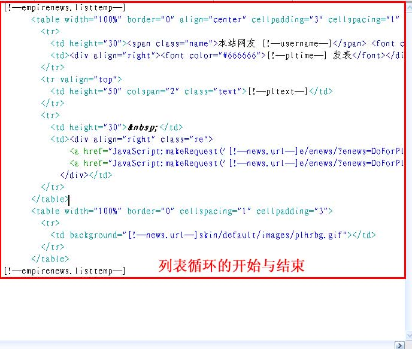

| 评论JS调用模板为控制信息内容页JS调用评论的页面格式(/e/pl/more) 。 |
|
| 评论JS调用模板制作格式 |
| 列表头 [!--empirenews.listtemp--] 列表内容 [!--empirenews.listtemp--] 列表尾 |
|
说明：第一个[!--empirenews.listtemp--]表示循环开始、第二个[!--empirenews.listtemp--]表示循环结束。 |
| 评论JS调用模板支持变量说明 |
| [!--news.url--]：网站地址(参数设置的站点地址) | [!--classid--]：栏目ID | [!--id--]：信息ID |
| [!--plid--]：评论ID | [!--pltext--]：评论内容 | [!--pltime--]：评论发表时间 |
| [!--plip--]：发表者IP | [!--userid--]：发表者ID | [!--username--]：发表者 |
| [!--zcnum--]：支持数 | [!--fdnum--]：反对数 |
|
| 支持PHP代码 | ||
| 内容模板调用JS评论地址：<script src="[!--news.url--]e/pl/more/?classid=[!--classid--]&id=[!--id--]&num=10"></script> | ||
| 修改评论JS调用模板 |
| 1、登录后台，单击“模板”菜单，选择“评论JS调用模板”子菜单，进入修改评论JS调用模板界面： |
| 图片1：菜单导航 |
| 2、进入“修改评论JS调用模板”界面，将模板代码复制到Dreamweaver编辑，如下图： |
| 3、把评论JS调用模板复制到Dreamweaver后可进行可视化编辑，如下图： |
| 图1：设计视图 图2： 代码模式  |
| 4、修改评论JS调用模板后，复制页面的代码到后台的“评论JS调用模板”文本框，然后点击“修改”即可修改完毕。 |
| 5、前台显示：内容模板加调用JS评论：<script src="[!--news.url--]e/pl/more/?classid=[!--classid--]&id=[!--id--]&num=10"></script> |